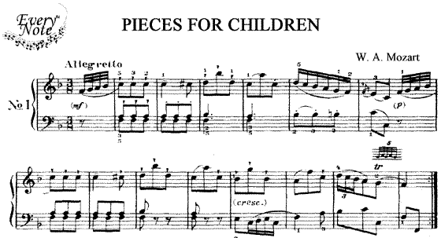
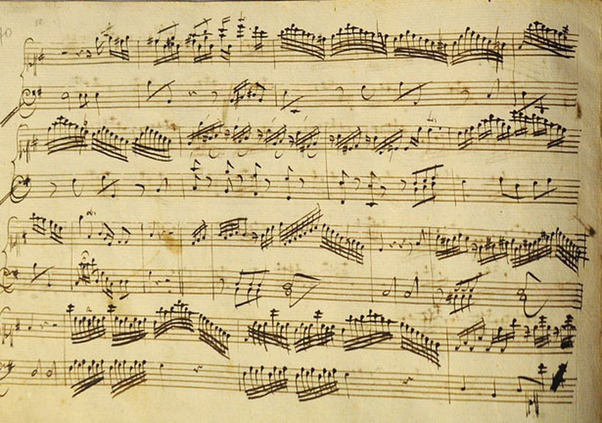

This is an area to guide musicians. If you're interested in them, click the the list on left.
In January 1781, Mozart's opera Idomeneo premiered with "considerable success" in Munich.My main goal right now is to meet the emperor in some agreeable fashion.

Piano Concerto No. 5 in D major, K. 175

Piano Concerto No. 7 in F major for Three Pianos, K. 242